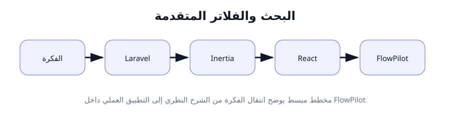
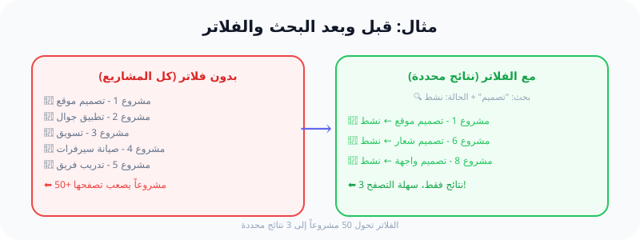

البحث والفلاتر المتقدمة: كيف نجد أي شيء بثوانٍ؟
"لم يعد أحد يبحث يدوياً. تعلم كيف تبني محرك بحث ذكي لمشاريع FlowPilot."
ما هو البحث والفلاتر المتقدمة؟
البحث (Search) يعني إدخال كلمة (مثل "تصميم") لنجد كل المشاريع التي تحتوي على هذه الكلمة في اسمها أو وصفها. الفلاتر (Filters) هي اختيارات مثل "حالة = مكتمل" أو "تاريخ = هذا الأسبوع".
في Laravel، نستخدم Query Builder (أداة بناء الاستعلامات) لإنشاء استعلامات SQL ديناميكية (تتغير حسب ما يختاره المستخدم).
📌 مصطلحات المبتدئ:
- where(): دالة تضيف شرطاً للاستعلام (مثل WHERE في SQL).
- orWhere(): دالة تضيف شرطاً "أو" (OR).
- LIKE: عامل (Operator) في SQL للبحث عن نص داخل حقل.
- when(): دالة Laravel ذكية تنفذ الكود فقط إذا تحقق الشرط.
- Preserve State: الحفاظ على حالة البحث عند التنقل بين صفحات النتائج.
كيف يعمل البحث باختصار؟
بدلاً من كتابة استعلام SQL ثابت مثل:
// SQL عادي: يجيب كل المشاريع
SELECT * FROM projects;
نكتب استعلاماً "ذكياً" يضيف الشروط حسب ما يرسله المستخدم:
// إذا كتب المستخدم "تصميم" + اختار "مكتمل"
SELECT * FROM projects
WHERE name LIKE '%تصميم%'
AND status = 'completed';
🧪 تشبيه واقعي: فهرس المكتبة الذكي
تخيل مكتبة ضخمة تحتوي على 10,000 كتاب. كيف تجد كتاباً معيناً؟
- البحث (Search): تكتب اسم المؤلف "نجيب محفوظ" → تظهر كل كتبه.
- الفلتر (Filter): تختار "قسم الروايات" → تظهر رواياته فقط.
- الجمع: تبحث عن "نجيب محفوظ" + تختار "روايات" + "سنة 1950" → نتيجة محددة جداً.
هذا بالضبط ما سنبنيه لبيانات FlowPilot!
🔗 الربط مع FlowPilot
في صفحة المشاريع، نريد أن نعطي المستخدم القدرة على:
- كتابة اسم مشروع في صندوق البحث (Search box).
- اختيار حالة:
activeأوcompletedأوarchived. - تحديد نطاق تاريخي: من تاريخ - إلى تاريخ.
- اختيار أولوية للمهام:
highأوmediumأوlow. - كل هذه الخيارات تبقى محفوظة عند التنقل بين الصفحات (Preserve State).
🛠 6 خطوات تطبيقية عملية
الخطوة 1: استقبال معاملات البحث من الـ Request
في ProjectController، نستقبل المدخلات من المستخدم:
public function index(Request $request)
{
$search = $request->input('search');
$status = $request->input('status');
$dateFrom = $request->input('date_from');
// ... باقي الفلاتر
}
الشرح: $request->input('search') تجلب قيمة حقل search المرسل من الواجهة. إذا لم يرسل المستخدم قيمة، ترجع null.
الخطوة 2: بناء الاستعلام باستخدام when()
نستخدم when() لبناء استعلام ديناميكي:
$projects = Project::query()
->when($search, function ($q, $search) {
$q->where('name', 'like', "%{$search}%");
})
->when($status, function ($q, $status) {
$q->where('status', $status);
})
->paginate(10);
الشرح: when(condition, callback) تشبه "IF" في PHP. إذا كان $search غير فارغ (ليس null أو empty)، ينفذ الـ callback ويضيف WHERE name LIKE '%search%'. إذا كان فارغاً، يتجاوز الشرط كلياً.
الخطوة 3: إضافة فلتر التاريخ (Date Range)
للبحث بين تاريخين (من - إلى):
->when($dateFrom, function ($q, $dateFrom) use ($dateTo) {
$q->whereDate('created_at', '>=', $dateFrom);
if ($dateTo) {
$q->whereDate('created_at', '<=', $dateTo);
}
})
الشرح: whereDate() تقارن التواريخ. >= يعني "أكبر من أو يساوي" (من تاريخ البدء). <= يعني "أصغر من أو يساوي" (حتى تاريخ الانتهاء).
الخطوة 4: البحث في حقول متعددة بـ orWhere()
للبحث في الاسم والوصف معاً:
->when($search, function ($q, $search) {
$q->where('name', 'like', "%{$search}%")
->orWhere('description', 'like', "%{$search}%");
})
الشرح: orWhere() تضيف شرط OR. يعني: "اسمه يحتوي على search أو وصفه يحتوي على search".
الخطوة 5: إرسال معاملات البحث للواجهة (Preserve State)
نمرر معاملات البحث إلى Inertia للحفاظ عليها:
return Inertia::render('Projects/Index', [
'projects' => ProjectResource::collection($projects),
'filters' => $request->only(['search', 'status', 'date_from', 'date_to']),
]);
الشرح: $request->only() ترجع مصفوفة (Array) تحتوي فقط على الحقول المحددة. نرسلها للواجهة كـ filters لتستخدمها في React للحفاظ على القيم في صندوق البحث والفلاتر.
الخطوة 6: الحفاظ على الفلاتر في الترقيم (Pagination)
نضيف appends() لروابط الصفحات:
$projects = Project::query()
->when(...)
->paginate(10)
->appends($request->only(['search', 'status']));
الشرح: appends() تضيف معاملات البحث إلى روابط الترقيم (Paginate links). مثلاً: ?page=2&search=تصميم&status=active. بدونها، ستفقد معاملات البحث عند الانتقال للصفحة التالية.
🔍 شرح الكود سطراً سطراً
// when($search, fn($q, $search) => ...)
// ▶ if(isset($search) && $search != '') { ... }
// $q->where('name', 'like', "%{$search}%")
// ▶ WHERE name LIKE '%تصميم%'
// ->paginate(10)
// ▶ LIMIT 10 OFFSET (page-1)*10
// $request->only(['search', 'status'])
// ▶ ['search' => 'تصميم', 'status' => 'active']
✅ النتيجة المتوقعة
عند فتح صفحة المشاريع في FlowPilot، سيظهر:
- صندوق بحث (Search Input) يبحث في اسم المشروع ووصفه.
- قائمة منسدلة (Dropdown) لاختيار الحالة (الكل/نشط/مكتمل/مؤرشف).
- منتقي تاريخ (Date Picker) من - إلى.
- قائمة مشاريع محدثة بناءً على الفلاتر.
- أزرار ترقيم تحافظ على الفلاتر (لن تفقد البحث عند التنقل بين الصفحات).
⚠️ الأخطاء الشائعة (4+)
❌ الخطأ 1: نسيان appends() مع الترقيم
المشكلة: عند النقر على صفحة 2، تختفي كلمة البحث وتظهر كل المشاريع.
الحل: أضف ->appends($request->only(['search', 'status'])) بعد paginate().
❌ الخطأ 2: استخدام where بدلاً of orWhere للبحث في عدة حقول
المشكلة: كتابة where('name', 'like', ...) ثم where('description', 'like', ...) بدون orWhere. هذا يجعل SQL يطلب كلا الشرطين معاً (AND)، ولن يعثر على نتائج.
الحل: استخدم orWhere() للبحث في الاسم أو الوصف.
❌ الخطأ 3: عدم التحقق من تاريخ null
المشكلة: إذا لم يحدد المستخدم تاريخ "إلى"، وأرسلته للاستعلام، سيبحث عن تاريخ فارغ ولن تظهر نتائج.
الحل: تأكد من وجود قيمة if ($dateTo) { ... } قبل إضافة الشرط.
❌ الخطأ 4: عدم حماية الاستعلام من SQL Injection
المشكلة: استخدام "%{$search}%" مباشرة مع LIKE قد يسمح بحقن SQL الخبيث.
الحل: Laravel Query Builder يحمي تلقائياً من SQL Injection. لكن تجنب استخدام DB::raw() مع إدخال المستخدم دون تنظيف.
❌ الخطأ 5: إرسال الفلاتر إلى Inertia ولكن لا تستخدمها في React
المشكلة: ترسل filters من Laravel ولكن صفحة React لا تقرأها ولا تضعها في input.
الحل: في React، استخدم usePage().props.filters لقراءة الفلاتر ووضعها كـ defaultValue في inputs.
📊 الرسوم البيانية
مخطط: تدفق البحث والفلاتر

مثال توضيحي: قبل وبعد تطبيق الفلاتر

📝 الخلاصة
- ✅ نستخدم
when()لبناء استعلامات ديناميكية تتغير حسب مدخلات المستخدم. - ✅
LIKEمع% %يسمح بالبحث الجزئي داخل النصوص. - ✅
appends()تحافظ على معاملات البحث في الترقيم. - ✅ نمرر
filtersإلى Inertia للحفاظ على حالة الواجهة (Preserve State). - ✅ في FlowPilot: نبحث في المشاريع والمهام حسب الاسم والحالة والتاريخ والأولوية.